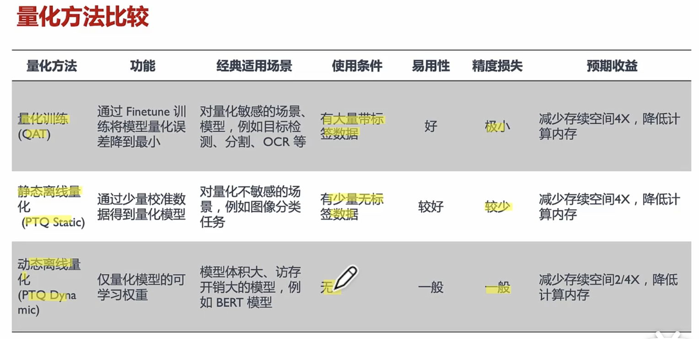
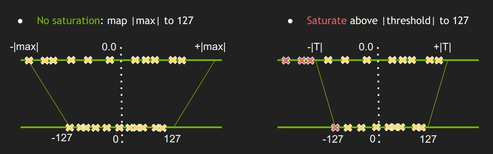
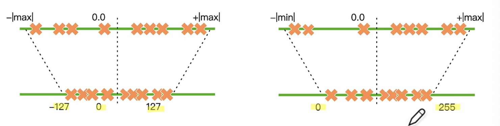

模型压缩

文章目录
模型压缩目的：
- 减少模型大小
- 加快训练速度
- 保持相同精度
模型压缩四件套：
- 量化
- 蒸馏
- 剪枝
- 二值化
模型低比特量化：
量化基础：
将浮点计算转化成低比特定点计算的技术，可有效减少计算强度，参数大小和内存消耗，但是会代码不小的精度损失。尤其在极低比特(<4bit)，二值网络(1bit)，甚至将提督进行量化时，精度挑战更大。
模型量化优点：
- 保持精度：量化会损失精度，相当于给网络加入噪音，但是神经网络对噪音一般不太敏感，所以只要把控好量化力度，对任务的精度影响不是很大。
- 加速计算：传统卷积都是FP32浮点运算，低比特数据可以减少大量的计算性能。
- 提升推理速度。
- 节省内存：与FP32相比，FP16，INT8，INT4所占空间更小。
- 降低运算内存消耗和模型存储内存消耗。
- 功耗降低
量化问题：
- 为什么模型量化能够对实际部署起到加速作用？
- 软件算法上的优化不一定总会增加效率，因为硬件不一定支持相应的的优化。
- 为什么需要对网络模型进行量化压缩呢？
- 边缘设备。
- 为什么不直接训练低精度的模型呢？
- 低精度会限制模型的能力。
- 什么情况下不应该/应该使用模型量化？
- 不应该：不是很大或者效果不好的模型
- 应该：模型很大
量化方法：
- 感知量化训练（QAT）：量化训练让模型感知量化运算对模型精度带来的影响
- 通过dinetune训练来降低量化误差
- 动态离线量化（PTQ Dynamic）：仅将模型中特定算子的权重从FP32映射成INT8/16
- 静态离线量化（PTQ Static）：使用少量无标签校准数据
量化方法对比：

量化原理：
量化桥接定点与浮点，建立一种有效的现行数据映射关系，使得以较小的精度损失代价获得较好的收益。
下图中，左图为一般量化，将浮点数的表示范围映射到INT8的[-127,127]。右图为截断量化，人为指定浮点数的[-T,T]映射到INT8的[-127,127]。

如何映射呢：
浮点与定点数据的转换公式： $$ \begin{split} Q &= \frac{R}{S} + Z \\ R &= (Q-Z) * S \end{split} $$ 其中 R表示输入浮点数；Q表示量化后的定点数；Z表示零点数值，用于非对称映射；S表示缩放因子。
求解S和Z
$$
\begin{split}
S =& \frac{R_{max} - R_{min}}{Q_{max} - Q_{min}} \\
Z =& Q_{max} - R_{max} / S
\end{split}
$$
量化类型
线性量化可分为对称量化与非对称量化.

感知量化QAT
文章作者 杨浩伟
上次更新 2023-02-12